A tymczasem w Cameracie...
.
2012-03-30
Zjeżdżamy się do Strumian na godz. 18.15. Spotkanie w salce przykościelnej. Chór ze Strumian już kończy swoją próbę i zwalnia nam salkę.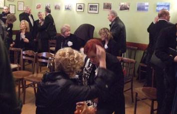
Robimy krótką rozśpiewkę, jeszcze kilka uwag od pani dyrygent Izabeli Szoty i cichutko schodzimy do kościoła.
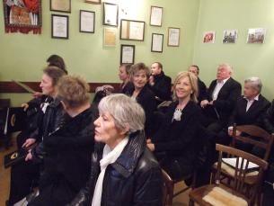 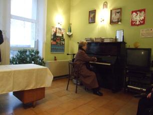
Scenariusz uroczystości:„Camerata” i Chór JP II przed rozpoczęciem koncertu udają się na chór
FILM Polskie kwiaty - ZIARENKO
Zagajenie/Wprowadzenie; Słowo – BURMISTRZ
Słowo Papieża – ścieżka 1
Ojcze nasz – CHÓR JP II (z chóru)
Mężczyźni z Chóru JP II przemieszczają się w miarę bezszelestnie pod chór
Liczę na Ciebie Ojcze – ZIARENKO
Z Listu do Efezjan – P. Płażek
Sanctus – CAMERATA, Zenon Kulik
Halleluja – YANABANDA
Z Listu do Efezjan – P. Płażek
Słowo Papieża – ścieżka 2
Potrzebuje cię Chrystus – ZIARENKO
Słowo Papieża – ścieżka nr 3
Dzisiaj spojrzał na mnie Pan – MAGDA-SCHOLA
Słowo Papieża – ścieżka nr 4
Ave verum – CHÓR JP II (żeński)
Mężczyźni z Chóru JP II idą przed ołtarz na środek, a za nimi panie z Chóru JP II
Z Listu do Efezjan – P. Płażek
Agnus Dei – CAMERATA, Zenon Kulik
„Camerata” w miarę możliwości bezszelestnie przemieszcza się pod chór
Dona nobis pacem – CHÓR JP II
„Camerata” idzie przed ołtarz na środek – dołącza do Chóru JP II
Słowo Papieża – ścieżka nr 5
Zdrowaś Królewno Wyborna – CAMERATA, CHÓR JP II
Gdy klęczę przed Tobą – ZIARENKO
Słowo Papieża – ścieżka nr 6
Pragnę miłością Twą – CHÓR JP II
Puk, puk – MAGDA-SCHOLA
Nobody knows – YANABANDA
Gdy kiedyś Pan – YANABANDA (Mały FINAŁ)
„Yanabanda” dołącza do chórów, „Ziarenko” i schole wychodzą również na środek
Słowo Papieża – ścieżka nr 7
Nim świt – TUTTI, P. Kmiecik
Słowo Papieża – ścieżka nr 8
Christus vincit – TUTTI, P. Kmiecik
Słowo Papieża – ścieżka nr 9
Barka – TUTTI, P. Kmiecik
„Yanabanda” wychodzi z chórów i próbuje ustawić się w grupie przed balaskami
Słowo Papieża – ścieżka nr 10
Misericordias Domini – TUTTI, P. Kmiecik (FINAŁ)
Na początek Camerata udaje się na chór, gdyż pierwsze utwory śpiewamy z chóru, przy akompaniamencie, na organach, Zenona Kulika.
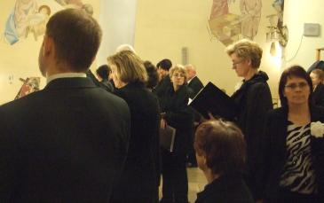
Inne zespoły śpiewają przed ołtarzem.
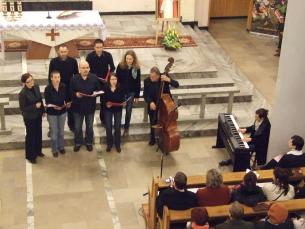 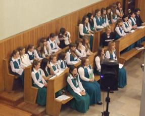 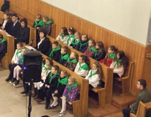 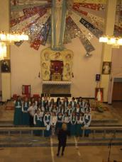
Po skończonym występie schodzimy pod ołtarz, gdzie dołączamy do chóru Jana Pawła II ze Strumian.
Tu odbędzie się dalsza część koncertu.
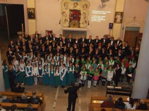 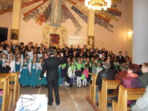
No i wielki finał wszystkich występujących i ich dyrygentów.
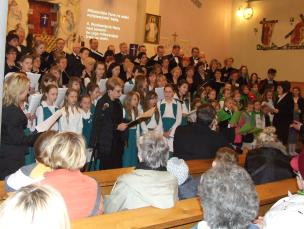 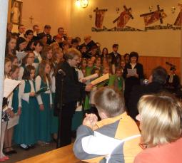 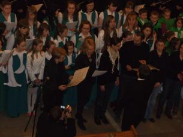
Na koniec podziękowania i kwiaty.
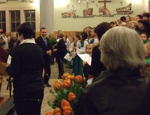 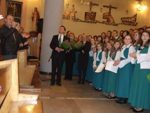 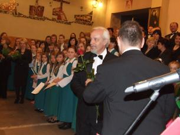

© Stowarzyszenie Muzyczne Chór Camerata Wieliczka